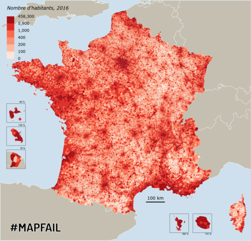

Comment choisir une représentation cartographique?
Déméler les faits et la rhétorique
(ENTPE)
02 Feb 2023

Petite histoire de la cartographie
“Cadastre” de Bedolina (découverte en en Italie du nord) 2000 av.nè. Quatre périodes au moins de gravure se superposent, et cette mystérieuse topographie apparaît sur la deuxième couche, voisinant avec des représentations de cervidés. S’il s’agit bien d’un premier vocabulaire topographique, nous ne savons pas le lire.
Cartes polynésiennes appelées Rebbelibs, Medosou ou Mattangs (1000 av.nè)
Carte babylonnienne du Monde découverte à Sippar,au sud de l’Irak. 600 av.n
La Géographie de Ptolémée (vers 200)
Au moyen-âge, les cartes T dans l’O
La géographie arabe (Al Idrisi, 1154)
la carte Kangnido (Corée, 1402)
les grandes découvertes (Waldseemüller, en 1507)
OpenStreetMap (Aujourd’hui)
Commercial and Political Atlas. William Playfair (1786)
Commercial and Political Atlas. William Playfair (1786)
Commercial and Political Atlas. William Playfair (1786)
Notes on Matters Affecting the Health, Efficiency and Hospital Administration of the British Army. Florence Nightingale (1857)
La première carte thématique de l’histoire (Charles Dupin, 1826)
La carte par points d’A. Frère de Montizon (1830)
La mushroom map d’Emile Cheysson (1886)
Charles Joseph Minard (1862)
Carte Figurative des pertes successives en hommes de l’armée française dans la campagne de Russie 1812–1813.
Charles Joseph Minard (1869). Le GOLD STANDARD de la dataviz. Minard représente en 1869 les pertes colossales de l’armée française dans la campagne de Russie au début du XIXe siècle. Cette fameuse « carte figurative » raconte l’histoire de cette armée, qui arrive à Moscou avec moins d’un quart de son effectif de départ, avant de se faire à nouveau décimer sur le voyage du retour.
Bertin Jacques, Sémiologie graphique, Paris, Mouton/Gauthier-Villars, 1967

Les variables visuelles

Les variables visuelles
Différenciation
Ordre
Proportionnalité

Pas de stock en aplats
Entre technique et rhétorique
Ce qui se cache derrière les cartes
Depuis l’Antiquité, sait que la Terre n’est pas plate
La Bille bleue (en anglais : « The Blue Marble ») est une photographie célèbre de la Terre prise le 7 décembre 1972 par l’équipage d’Apollo 17 lors de son voyage vers la Lune, à une distance d’environ 45 000 km.
“La Terre est bleue comme une Orange” (Paul Eluard)
“La Terre est bleue comme une Orange” (Paul Eluard)
Le géoîde corresond à la surface d’altitude zéro
Le géoîde correspond à la surface d’altitude zéro
L’ellipsoide est une approximation mathématique de la forme de la Terre.
C’est à partir de l’ellipsoide qu’on détermine les latitudes et longitudes
Mettre à plat
Un choix technique pour minimiser les déformations
La projection de Mercator (projection conforme)
La projection de Mercator
La projection de Mercator
La projection de Mercator
La projection de Mercator
La projection de Mercator
La question de la projection pose aussi la question du centre
Le monde vu par les USA
Le monde vu d’Asie
Le monde vu d’Australie
Le monde vu de Chine
Personne au centre
Personne au centre
Changer de perspective
Upside Down
Changer de perspective
Les cartes s’appuient bien souvent sur un maillage administratif
Soit, une réalité géographique fictive.
Mettons ces habitants dans différents maillages fictifs 
Les cartes produites sont différentes
Les cartes produites sont différentes
MAUP : en géographie, les statistiques et les représentations sont dépendantes de l’échelle d’analyse.
Le maillage peut faire “mentir” les cartes
Le maillage peut faire “mentir” les cartes
Les couleurs
Les couleurs
le bleu : Couleur du ciel, universelle, consensus, sagesse, couleur discrète.
Le vert. Fertilité (en Europe), Islam (pour les musulmans), deuil (Asie), nature, couleur nationale irlandaise.
Le rouge c’est le feu, le sang, l’amour mais c’est aussi l’enfer. Le rouge attire l’œil, c’est la couleur du danger (dans la nature, ce qui est rouge est souvent venimeux ou vénéneux). En politique, le rouge, c’est aussi évidemment le communisme. Sur nombre de cartes historiques, l’URSS est représenté en rouge. Couleur orgueilleuse, de pouvoir et d’ambitions, insolente, violente, crimes et péchés lui sont associés. Mais en Inde, elle évoque la pureté.
Le rouge c’est le feu, le sang, l’amour mais c’est aussi l’enfer. Le rouge attire l’œil, c’est la couleur du danger (dans la nature, ce qui est rouge est souvent venimeux ou vénéneux). En politique, le rouge, c’est aussi évidemment le communisme. Sur nombre de cartes historiques, l’URSS est représenté en rouge. Couleur orgueilleuse, de pouvoir et d’ambitions, insolente, violente, crimes et péchés lui sont associés. Mais en Inde, elle évoque la pureté.
Le noir. Fascisme, anarchisme, extremisme, terrorisme, deuil
Noir et blanc
Le choix de la bonne taille dépend de la lisibité mais aussi du message que l’on souhaite délivrer
Titre : ?
Titre neutre :
Les Roms en Europe
Titre raciste :
L’invasion Roms : le grand remplacement a commencé
Titre original :
Les Roms, peuple européen
Méfiez-vous des cartes pas des migrants
Pour conclure
Pas de bonne carte sans bonne sémio
Mais dans ce cadre, les choix graphiques sont infinis.
Le monde vu par Frontex
Le monde vu par Philippe “Reka”
Faite jouer votre esprit critique pour déméler ce qui relève du rationnel et de la rhétorique.